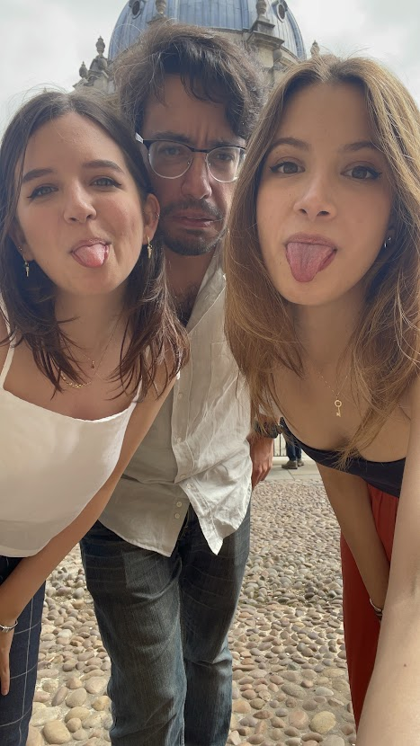
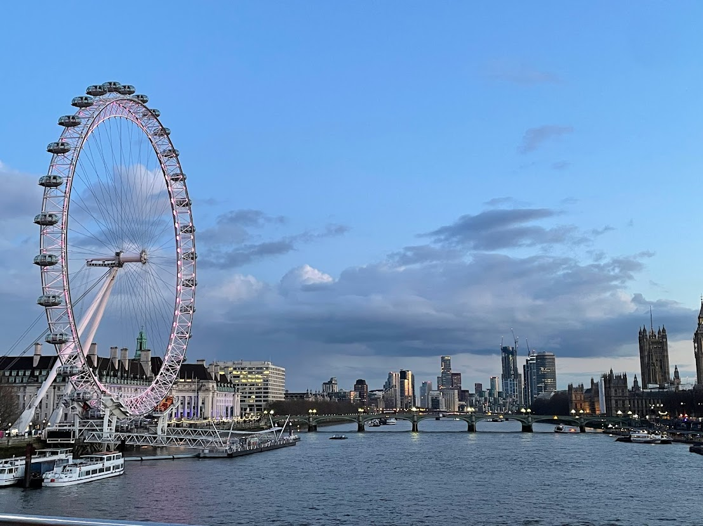
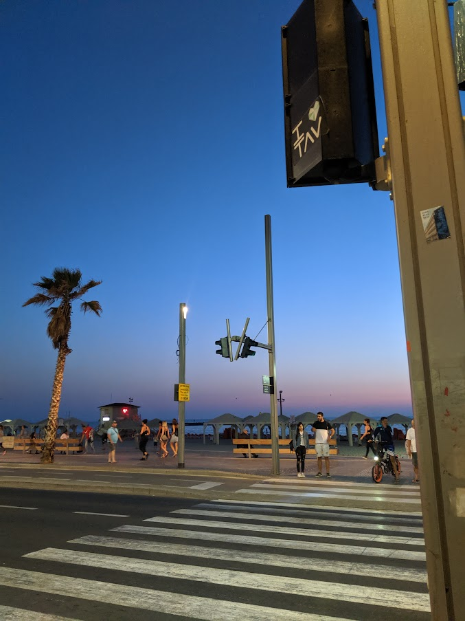
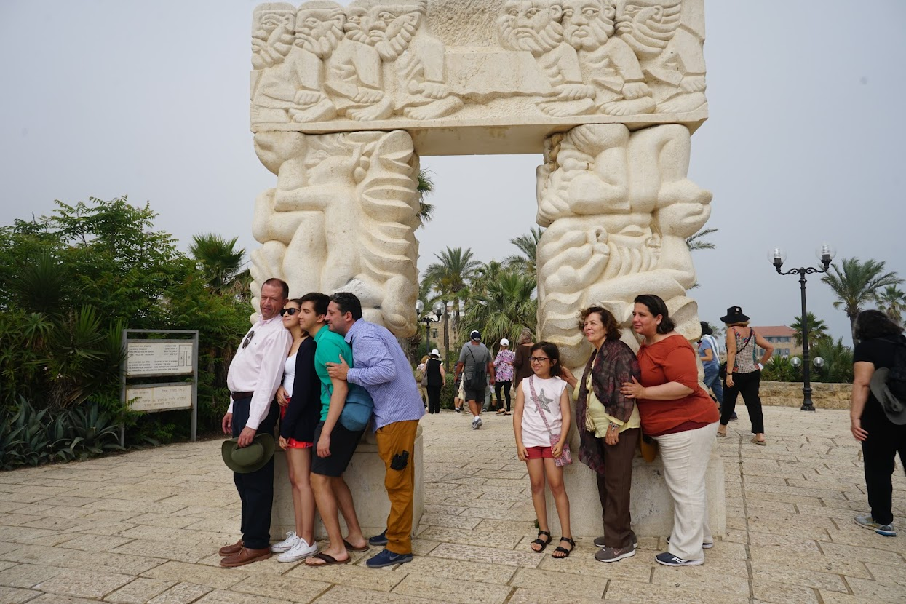
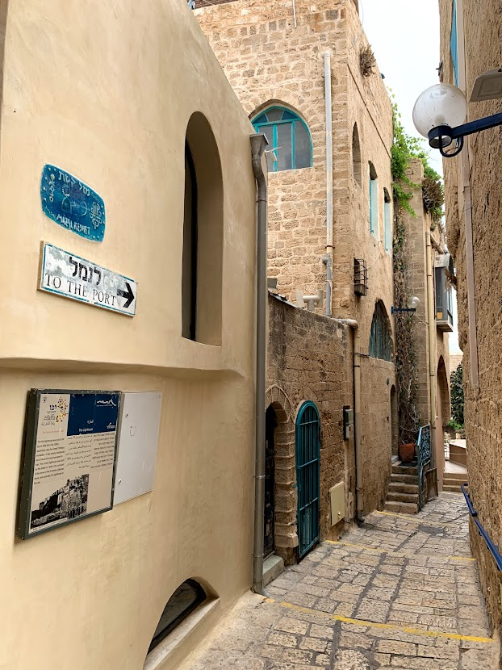
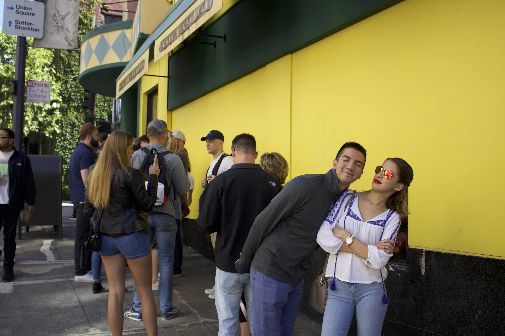

Lugares fav en orden
Me considero una persona realmente privilegiada al conocer lugares alrededor del mundo y haberlos podido disfrutar con amigos y familia por igual. Es por eso que creo que algunos de estos lugares están aquí por los recuerdos que tengo de ellos, y no me lo tomen a mal, todos y cada uno de ellos son preciosos en sí, pero ahora tengo un pedacito de ellos que atesoro.
Londres
Londres. No podría estar en otro lugar más que en el primero. Me enamoré de esta ciudad a los 8 años, cuando viajé por primera vez sin mis papás. En ese entonces, con mi tía de la mano y energía de niña recorrí cada rincón que la ciudad tiene por ofrecer. Me perdí en una juguetería, comí postres que me quisiera volver a saborear como la primera vez y crecí, creo que fue la vez que definió que estaría saliendo de casa más adelante. Regresé a estudiar en Septiembre del 2021 a un pueblo cercano, teniendo a Londres a 2hrs de camino en tren, visité con mis amigos más veces de las que recuerdo. Nos enamoramos de un lugar de sushi y volvimos cada vez, vi obras de teatro en West Elm que me encantaron y camine. Camine por calles fuera de la ruta y conocí pequeñas tiendas con encanto, me encontré amigos de tiempo atrás y disfruté la ciudad que me enamoró de pequeña.
|  |  |
|---|
Tel Aviv
Creo que esta ciudad llega a este lugar en la lista por la experiencia que tuve visitandola con mi familia. Veníamos de Jerusalem a Tel Aviv y ya habíamos sufrido algunos cuantos accidentes en el camino (un descalabrado, golpes de calor, problemas de rodilla, perdernos), pero eso nunca nos baja el ánimo. La playa de la ciudad es espectacular y la seguridad en la noche nos permitió visitarla a varias horas del día. La comida nos sorprendió gratamente, pero como es de mi familia, siempre buscamos lugares japonenes y los que encontramos, eran muy buenos. Visitamos tiendas locales y el diseño y el estilo estaba presente en cada una. Visitamos lugares culturales también pero claro que nos tomamos fotos un poco más al estilo de mi familia. De aquí me llevé un recuerdo azul, como es la creencia que el azul protege.
|  |  |  |
|---|
Guadalajara
Mi familia materna es originaria de Jalisco, bueno mi mamá es de Morelos y mi abuela de El Salto, Jalisco, pero eventualmente se mudaron a Guadalajara. Gran parte de mi infancia, sobre todo en verano solía ir a visitar a mis primos y tíos, recorríamos Tlaquepaque, Zapopan y algunos pueblos cercanos. Esta ciudad la tengo en mi corazón y estoy orgullosa de que parte de mi origen es de este estado, sobre todo algunas de las manías que tengo al comer inculcadas por mi mamá claro. Los chilaquiles tienen que estar aguaditos, las tortas ahogadas bien bañadas en salsa y nada seco. De igual manera aquí he disfrutado de muchos mariachis, y sólo del bueno, si no, mi bisabuela se molestaba. Guadalajara siempre me ha dado un aire alegre, vivo y con ganas de divertirse y espero volver pronto.

|

|

|
|---|
San Francisco
Creo que soy fan de las ciudades grandes por venir de una, siempre tan apuradas y llenas de gente. San Francisco me da esa misma sensación, si está el
turismo y demás, pero la gente tiene cosas que hacer, va rápido y se siente en el ambiente. Ahora no solo por ser una ciudad con mucho desarrollo
significa que los obstáculos físicos dejen de estar, con sus calles empinadas aprendí que tenía la nariz chueca y no podía subir una sin bufar.
Siendo una ciudad que está en desarrollo en la parte de empleabilidad, con gente concentrada en servicios financieros, turismo y tecnología, es
una cuna para la interculturalidad, ya que llega gente de todos lados a aportar y trabajar.
Por último, creo que esta es una de las ciudades donde me encontré a artistas que me encantaron, uno de ellos Tom Everhart, el único artisita que tiene
licencia para reproducir personajes de Peanuts.
|  |

|

|
|---|